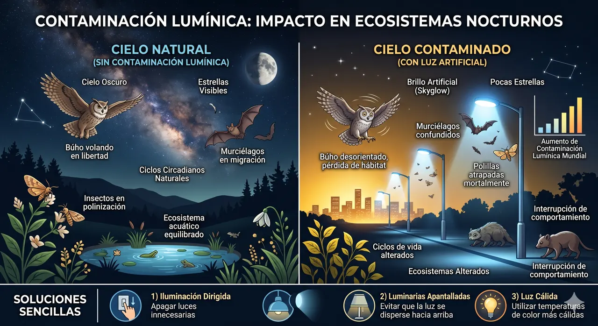
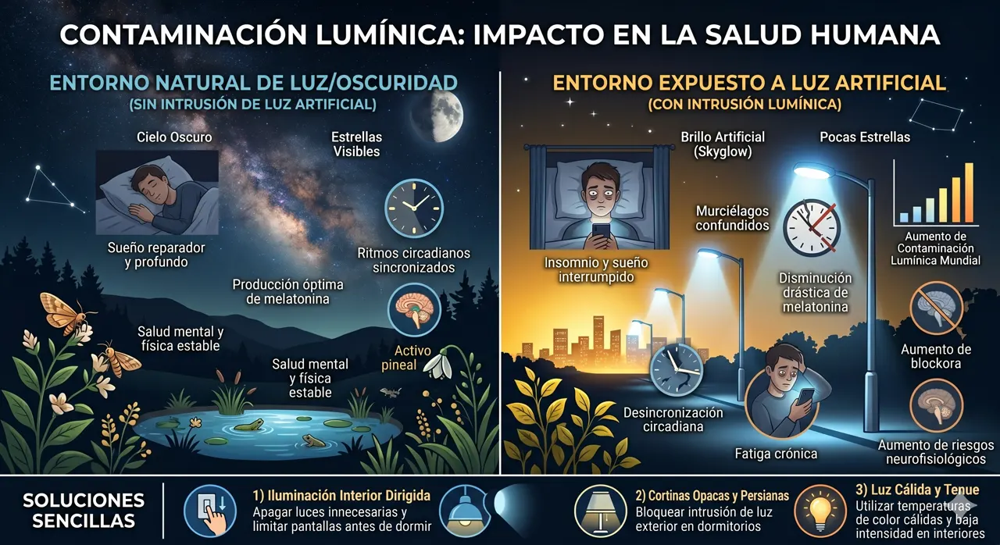

La contaminación lumínica
El brillo que nos roba el Universo
¿Sabías que una gran parte de la iluminación artificial nocturna está mal diseñada? No se trata de prohibir la luz, sino de usarla con inteligencia y dirección. ¡Acompáñanos a descubrir por qué la noche necesita oscuridad natural!
- Comparador de cielos
- Al final te espera una trivia para coleccionar estrellas

Desliza para comparar el impacto
Usa el deslizador del centro para ver cómo un cielo afectado por luces urbanas (izquierda) se transforma en un cielo perfectamente preservado (derecha).


Definición de base
"Se produce cuando la luz artificial se utiliza de forma inadecuada o excesiva, especialmente de noche..."
La contaminación lumínica se produce cuando parte de la luz artificial de ciudades, calles y edificios se dispersa hacia el cielo nocturno. Al interactuar con moléculas del aire, gotas de agua y pequeñas partículas en suspensión, esa luz se difunde en todas direcciones, creando un brillo artificial que reduce el contraste del cielo y dificulta la observación de estrellas, planetas y otros astros.
Para registrar en el cuaderno
La contaminación lumínica es evitable. Es el resultado directo de luminarias mal dirigidas (que apuntan hacia arriba o hacia los lados), bombillas sobrepotenciadas o el uso innecesario de reflectores durante la madrugada.
Dato curioso: en un cielo realmente oscuro pueden verse unas 2.500 estrellas a simple vista, mientras que en el centro de una gran ciudad a veces solo se distinguen unas pocas decenas.
Los 4 efectos negativos más importantes
La luz ineficiente afecta mucho más que solo la vista de las estrellas.
-
Alteración de la flora y fauna
Ecosistemas nocturnos
Las especies nocturnas dependen de la oscuridad total para alimentarse, camuflarse y reproducirse. Las aves migratorias se desorientan al confundir las luces artificiales con los astros guías, y las tortugas recién nacidas caminan en dirección contraria al océano al ser atraídas por luces costeras artificiales.

-
La calidad de nuestro sueño
Salud humana
Nuestro cuerpo regula su descanso mediante ciclos circadianos de 24 horas guiados por la luz natural. La luz artificial intrusa de noche inhibe la secreción de melatonina (la hormona del sueño), lo que causa trastornos de sueño, fatiga crónica, estrés, ansiedad e incluso riesgos a largo plazo para la salud metabólica.

-
Desperdicio económico y de recursos
Economía y energía
Iluminar el cielo no aporta seguridad ni visibilidad terrestre; es simplemente desperdicio de energía. Se estima que miles de millones de kilovatios-hora anuales se pierden apuntando en direcciones innecesarias. Esto se traduce en facturas públicas astronómicas y toneladas de emisiones innecesarias de CO2 de las centrales térmicas que producen esa energía desaprovechada.
¿Sabías que? Una luminaria bien apantallada que solo dirija la luz hacia el suelo requiere hasta un 50% menos de potencia para alumbrar la misma superficie de manera mucho más uniforme y eficiente.
-
Pérdida del patrimonio estelar
Paisaje nocturno
El cielo estrellado es un patrimonio natural, cultural e histórico indiscutible de la humanidad. Hoy en día, una de cada tres personas en la Tierra no puede ver la Vía Láctea desde su lugar de origen. Esto no solo dificulta el trabajo de los centros de investigación astronómica, sino que también rompe el vínculo emocional de las nuevas generaciones con el cosmos infinito que nos rodea.
Patrimonio en peligro: Culturas antiguas guiaban su vida, siembras y cosmología observando las constelaciones. Perder el cielo estrellado es borrar parte de nuestra historia colectiva.
¿Cómo afecta la luz artificial al planeta?
Te invitamos a ver este breve vídeo para consolidar lo aprendido sobre contaminación lumínica. Explica con claridad y gráficos la diferencia entre iluminar adecuadamente y sobreiluminar.
- Presta atención a los ejemplos de diseño de farolas.
- Registra los datos que consideres importantes en tu cuaderno.
Iluminación inteligente: ¿cómo solucionarlo?
La luz artificial ha sido uno de los inventos que más bienestar ha traído a la humanidad. No se trata de volver a la edad de piedra, sino de usarla con responsabilidad.
Apuntar hacia abajo
Las luminarias deben contar con pantallas o apantallamientos superiores para evitar que la luz escape hacia los lados o arriba.
Usar luz cálida
Evitar lámparas LED blancas frías (5000K+). Las luces de tonos cálidos (2700K o menos) dañan mucho menos los ritmos biológicos.
Regular la intensidad
Usar solamente la potencia necesaria para garantizar la visibilidad en calles y evitar reflejos o deslumbramiento peligroso.
Apagar o atenuar
Instalar sensores de movimiento o temporizadores para reducir la luz en zonas poco transitadas a altas horas de la madrugada.
Demuestra tu comprensión
Responde las 5 preguntas (¡incluye una pregunta extra para conseguir un bonus point!). Si respondes bien, iluminarás las estrellas de tu constelación.